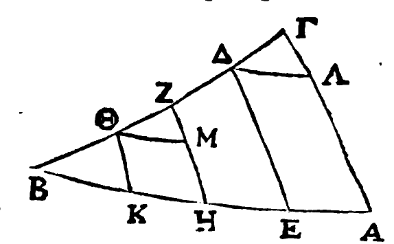
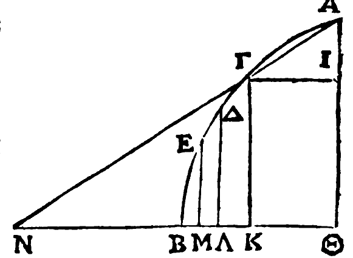

Proposition III.11 — Theorem: Base Arc Differences & Ratio Bounds¶
Menelai Alexandrini Sphaericorum Lib. III Prop. XI. Theor. (Halley 1758, pp. 97–99)
Enunciation (Halley 1758, p. 97)
If the greater leg of a spherical triangle shall not have exceeded a quadrant of a circle, and from that greater leg two arcs be taken, from whose endpoints arcs be drawn to the base containing with it angles equal to the angle contained by the base and the remaining leg; and if the arcs taken be equal, the differences between those drawn arcs shall be unequal, and the less of the differences shall be that which is between the arcs adjacent to the less leg: but if those differences between the drawn arcs be equal, then the arcs taken shall be unequal, and the greater of them shall be that which is nearer to the vertex of the triangle. And if one of the two arcs taken, together with the difference of the arcs drawn through its endpoints, be equal to the other arc taken together with the difference of the arcs also drawn through its endpoints, then those two arcs taken shall be unequal, and the greater of them shall be that nearer to the vertex of the triangle. But if the difference between one of the arcs taken and the excess by which the two arcs drawn through its endpoints differ be equal to the difference between the other arc and the excess by which the arcs also drawn through the endpoints of the same differ, then that arc which is adjacent to the vertex of the triangle shall be less than the other. And universally the ratio of that arc which is taken nearer to the vertex of the triangle to the remaining arc taken more remotely shall be greater than the ratio which the difference between the arcs drawn through the endpoints of the prior has to the difference which is between those drawn through the endpoints of the other.


Let \(\triangle \mathrm{AB\Gamma}\) be a spherical triangle, whose leg \(\widehat{\mathrm{B\Gamma}}\) is greater than the remaining leg \(\widehat{\mathrm{\Gamma A}}\), yet not greater than a quadrant of a circle; and on \(\mathrm{B\Gamma}\) let arcs \(\widehat{\mathrm{\Gamma\Delta}}, \widehat{\mathrm{Z\Theta}}\) be taken, and through their endpoints let arcs \(\mathrm{\Delta E}, \mathrm{ZH}, \mathrm{\Theta K}\) be drawn containing with the base angles equal to angle \(\angle \mathrm{A}\): I say that if arc \(\widehat{\mathrm{\Gamma\Delta}}\) be equal to arc \(\widehat{\mathrm{Z\Theta}}\), then \(\widehat{\mathrm{\Gamma\Lambda}}\)—the difference between arcs \(\widehat{\mathrm{\Gamma A}}, \widehat{\mathrm{\Delta E}}\)—is less than \(\widehat{\mathrm{ZM}}\), the difference of \(\widehat{\mathrm{ZH}}, \widehat{\mathrm{\Theta K}}\): if the differences between the said arcs be equal, arc \(\widehat{\mathrm{\Gamma\Delta}}\) is greater than arc \(\widehat{\mathrm{Z\Theta}}\). And if arc \(\widehat{\mathrm{\Gamma\Delta}}\) together with the excess by which \(\widehat{\mathrm{\Gamma A}}\) exceeds \(\widehat{\mathrm{\Delta E}}\) be equal to arc \(\widehat{\mathrm{Z\Theta}}\) together with the difference of \(\widehat{\mathrm{ZH}}, \widehat{\mathrm{\Theta K}}\), then arc \(\widehat{\mathrm{\Gamma\Delta}}\) is also greater than arc \(\widehat{\mathrm{Z\Theta}}\). But if the difference between arc \(\widehat{\mathrm{\Gamma\Delta}}\) and \(\widehat{\mathrm{\Gamma\Lambda}}\) (by which namely \(\widehat{\mathrm{\Gamma A}}\) exceeds \(\widehat{\mathrm{\Delta E}}\)) be equal to the difference between \(\widehat{\mathrm{Z\Theta}}\) and \(\widehat{\mathrm{ZM}}\) (by which \(\widehat{\mathrm{ZH}}\) exceeds \(\widehat{\mathrm{\Theta K}}\)), then arc \(\widehat{\mathrm{\Gamma\Delta}}\) will be less than arc \(\widehat{\mathrm{Z\Theta}}\). Finally, I say that the ratio of arc \(\widehat{\mathrm{\Gamma\Delta}}\) to arc \(\widehat{\mathrm{Z\Theta}}\) is greater than the ratio of arc \(\widehat{\mathrm{\Gamma\Lambda}}\) to arc \(\widehat{\mathrm{ZM}}\).
For since triangles \(\triangle \mathrm{AB\Gamma}, \triangle \mathrm{\Delta BE}\), etc. have angle \(\angle \mathrm{B}\) in common, and angles at points \(\mathrm{A}, \mathrm{E}, \mathrm{H}, \mathrm{K}\) equal, the sine of arc \(\widehat{\mathrm{B\Gamma}}\) will be to the sine of arc \(\widehat{\mathrm{B\Delta}}\) as the sine of arc \(\widehat{\mathrm{\Gamma A}}\) is to the sine of arc \(\widehat{\mathrm{\Delta E}}\) (by Book III Prop. 2). And by like reasoning, the sine of arc \(\widehat{\mathrm{B\Delta}}\) will be to the sine of arc \(\widehat{\mathrm{BZ}}\) as the sine of arc \(\widehat{\mathrm{\Delta E}}\) is to the sine of arc \(\widehat{\mathrm{ZH}}\); and the sine of arc \(\widehat{\mathrm{ZB}}\) to the sine of arc \(\widehat{\mathrm{B\Theta}}\) as the sine of arc \(\widehat{\mathrm{ZH}}\) to the sine of arc \(\widehat{\mathrm{\Theta K}}\). Now arc \(\widehat{\mathrm{B\Gamma}}\) is greater than arc \(\widehat{\mathrm{\Gamma A}}\), yet not greater than a fourth part of a circle; and since these things are so, all those things which were stated in this proposition will come to pass, the demonstration of which, as of many similar ones, is to be sought from the first part of the Book of Cyclical Lemmas. For demonstrating these, the following Lemma with its Corollaries will not seem useless.
Lemma. The ratio which a greater arc has to a less is greater than the ratio which the sine of the greater has to the sine of the less.
Let \(\widehat{\mathrm{AB}}, \widehat{\mathrm{B\Gamma}}\) be two arcs, whose sines are straight lines \(\mathrm{A\Theta}, \mathrm{\Gamma K}\), applied perpendicularly to diameter \(\mathrm{B\Theta}\): I say that arc \(\widehat{\mathrm{AB}}\) has a greater ratio to arc \(\widehat{\mathrm{B\Gamma}}\) than \(\mathrm{A\Theta}\) has to \(\mathrm{\Gamma K}\).
f. 0115 · p. 99

Draw straight line \(\mathrm{A\Gamma}\), and produce it to meet diameter \(\mathrm{B\Theta}\) also produced at point \(\mathrm{N}\), and \(\mathrm{AN}\) will be to \(\mathrm{N\Gamma}\) as \(\mathrm{A\Theta}\) to \(\mathrm{\Gamma K}\), and dividendo \(\mathrm{\Gamma N}\) will be to \(\mathrm{A\Gamma}\) as \(\mathrm{\Gamma K}\) to \(\mathrm{AI}\), or to the difference of \(\mathrm{A\Theta}, \mathrm{\Gamma K}\) themselves. But \(\mathrm{N\Gamma}\) is greater than arc \(\widehat{\mathrm{B\Gamma}}\) (inasmuch as it is greater than the tangent), and chord \(\mathrm{A\Gamma}\) is less than arc \(\widehat{\mathrm{A\Gamma}}\): therefore the ratio of arc \(\widehat{\mathrm{A\Gamma}}\) to arc \(\widehat{\mathrm{\Gamma B}}\) is greater than the ratio of straight line \(\mathrm{\Gamma A}\) to straight line \(\mathrm{N\Gamma}\). Therefore componendo, the ratio of arc \(\widehat{\mathrm{AB}}\) to \(\widehat{\mathrm{B\Gamma}}\) will be greater than the ratio of \(\mathrm{AN}\) to \(\mathrm{N\Gamma}\), that is, than the ratio of \(\mathrm{A\Theta}\) to \(\mathrm{K\Gamma}\). Quod erat demonstrandum.
Coroll. 1. Therefore, permutando, the ratio of the greater arc to its sine is greater than the ratio of the less arc to its sine; and thus the smaller an arc is, the smaller will be the ratio of it to its adjacent sine.
Coroll. 2. Whence it will be manifest that if the sines of four arcs be proportional—that is, if \(\mathrm{A\Theta}\) be to \(\mathrm{\Gamma K}\) as \(\mathrm{\Delta\Lambda}\) to \(\mathrm{EM}\)—the ratio of arc \(\widehat{\mathrm{AB}}\) to \(\widehat{\mathrm{B\Gamma}}\) will be greater than the ratio of arc \(\widehat{\mathrm{B\Delta}}\) to \(\widehat{\mathrm{BE}}\).*
Coroll. 3. Moreover, while the said ratio of sines remains, dividendo, the ratio of arc \(\widehat{\mathrm{A\Gamma}}\) to arc \(\widehat{\mathrm{\Delta E}}\) will be the greater, the greater those sines are.